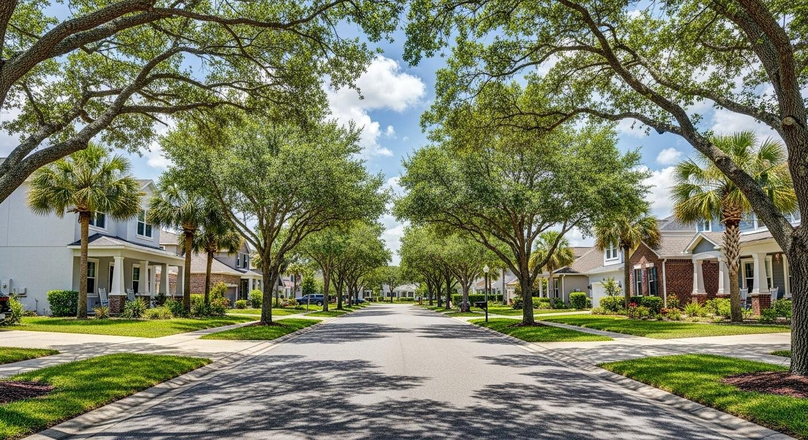
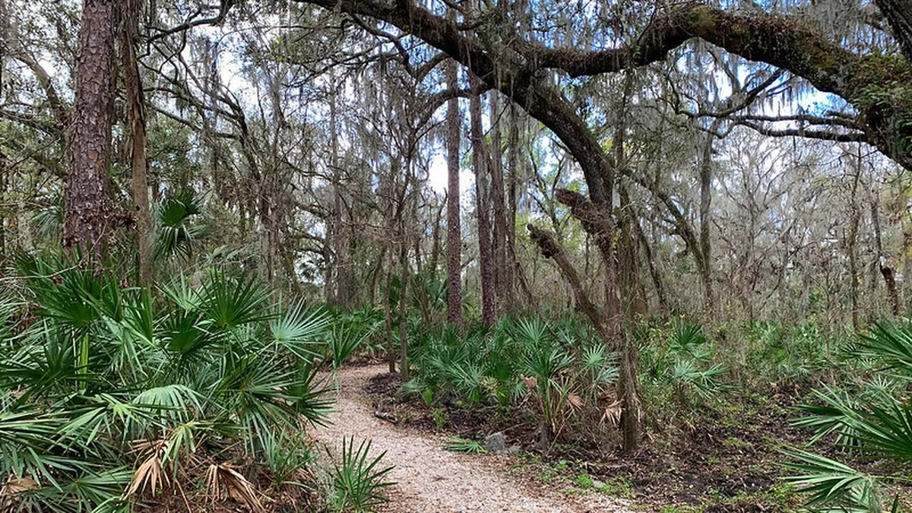
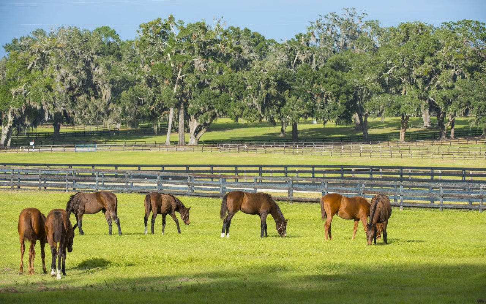

An independent guide to one of Tampa Bay's most established master-planned communities — schools, lifestyle, home costs, and everything in between.

Fish Hawk Ranch sits in unincorporated Hillsborough County, about 20 miles southeast of downtown Tampa. It was developed with trails, parks, and top-rated schools woven into the neighborhood plan from the start — not added as afterthoughts.
What draws most families here is the combination of space, greenery, and access. You're close enough to Tampa and Brandon for commuting, but the area still feels genuinely suburban rather than congested. The school zones alone make it one of the most sought-after addresses in the county.
This site is maintained by a local mortgage broker who works with families relocating to Fish Hawk Ranch every year. The information here is independent — no developer, no HOA, no real estate brokerage behind it.
Explore the BlogFish Hawk Ranch isn't one thing — it's the combination of factors that's hard to find elsewhere in the Tampa Bay area at this price point.
All six public schools in the Fish Hawk zone rank among the highest in Hillsborough County. Newsome High School consistently ranks in the top tier statewide.
Over 25 miles of paved trails connect neighborhoods throughout the community. Parks, ponds, and nature preserves are built into the layout, not squeezed in.
Fish Hawk Ranch has been building since the late 1990s. The tree canopy, mature landscaping, and variety of home sizes reflect decades of development.
US-301 and the Selmon Expressway put downtown Tampa, MacDill AFB, and the Brandon employment corridor within a reasonable daily drive.
Multiple pools, fitness centers, tennis and pickleball courts, and clubhouses are spread across the community and maintained through the HOA and CDD.
Ospreys, sandhill cranes, and deer are common sights. The Alafia River corridor runs nearby, and the natural landscape is a real part of daily life here.
All six schools serving Fish Hawk Ranch are part of Hillsborough County Public Schools. Zoning can vary by street, so verify your specific address at the HCPS school locator.
| School | Level | Grades | Location | Rating |
|---|---|---|---|---|
| Fishhawk Creek Elementary | Elementary | K–5 | Lithia, FL | |
| Bevis Elementary | Elementary | K–5 | Lithia, FL | |
| Stowers Elementary | Elementary | K–5 | Lithia, FL | |
| Barrington Middle | Middle | 6–8 | Lithia, FL | |
| Randall Middle | Middle | 6–8 | Lithia, FL | |
| Newsome High School | High | 9–12 | Lithia, FL |

In-depth guides on life in Fish Hawk Ranch — from school zones and home costs to VA loans and commute times.
Local mortgage expertise from a broker who works in this market regularly. Whether you're financing a move-up home, using a VA loan, or buying for the first time, get your questions answered before you start shopping.
Get in Touch